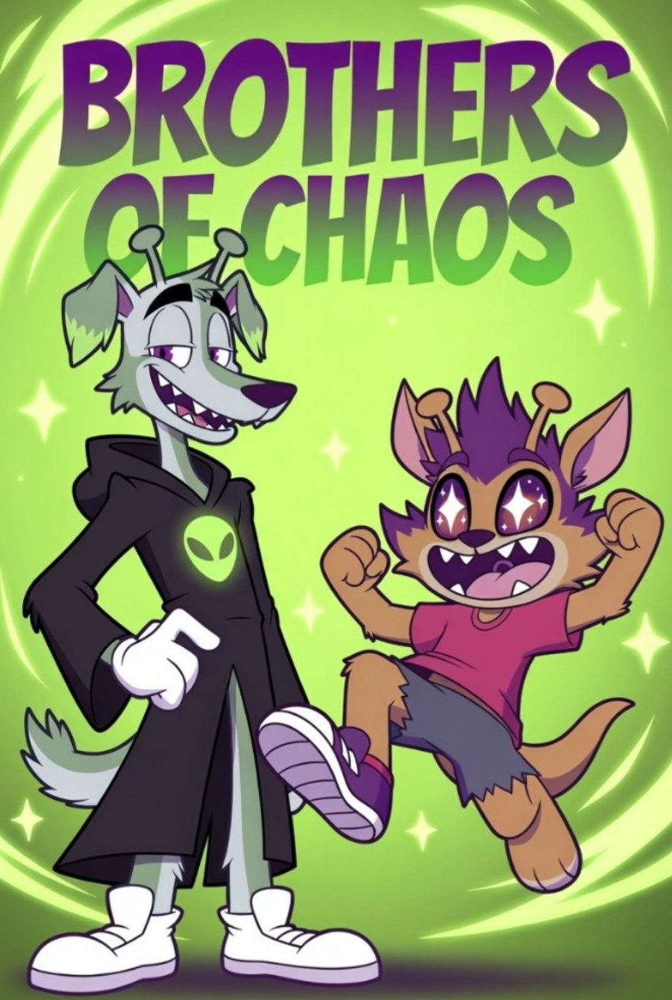

Två utomjordiska bröder kraschar sitt rymdskepp i en trädgård i den lilla svenska staden Mossby. Kaoskristallen som driver skeppet splittras i fem skärvor och sprids över stan. Nu måste de hitta alla fem, utan att bli upptäckta av en hemlig agent, en misstänksam katt och Elsas mamma.
Läs ett avsnitt i taget · ca 11 rutor per avsnittManus, namn och handling är klara. Rutorna ovan använder dina egna figurer från omslaget. Vill du rita om varje ruta som en färdig bild kan du använda gratis bildverktyg. Ladda upp ditt omslag som referensbild varje gång, så ser Vex och Zippo likadana ut i alla rutor. Prompterna är på engelska eftersom bildverktygen förstår engelska bäst.